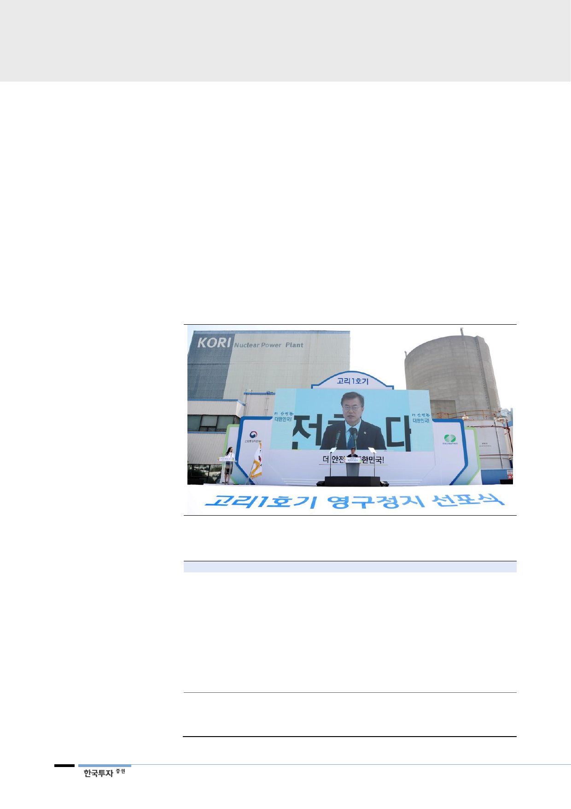

탈원전 선언 이후 1년
II. 전력 패러다임 전환의 과도기
1. 탈원전, 전력시장의 변곡점
작년 9월 문재인 대통령은 고리 1호기 원전의 영구정지 선포식에서 탈원전 ∙ 탈
석탄 시대가 도래했음을 선언했다. 신규 원전 건설 백지화 및 노후화된 석탄발전
소 폐쇄, 신재생에너지 확대 등 정부가 제시했던 에너지 전환에 대한 방향성은 이
후 수립된 8차 전력수급계획과 재생에너지 3020 등에서 구체화됐다. 정부는 현
재 전체 발전설비 중 10%에 불과한 재생에너지 비중을 2030년 34%로 키울 방
침이다. 기저발전(원자력과 석탄발전)이 정체되는 반면 신재생에너지는 향후 15
년간 13%씩 확대하겠다는 계획이다. 이렇게 되면 2030년 전체 발전량의 20%
가 재생에너지로 생산된다.
[그림 7] 문재인 대통령 “원전 중심의 발전정책을 폐기하고 탈핵 시대로 가겠다”
자료: 언론자료, 한국투자증권
<표 3> 정부의 에너지정책 추이
일자
2017년 3월
4월
6월
7월
9월
10월
12월
2018년 3월
4월
6월
주요 내용
전력거래에서 환경과 국민안전 고려 의무화하는 내용의 전기사업법 개정안 국회 통과
문재인 대통령(당시 후보), 신고리 5∙6호기 건설중단 공약 제시
문재인 대통령, 고리 1호기 영구정지 선포식에서 탈원전∙탈석탄 시대를 선언
정부, 신고리 5∙6호기 건설 여부를 사회적 공론화 과정 거쳐 결정하기로 밝힘
한국수력원자력, 신고리 5∙6호기 건설 일시 중단하기로 결정
원자력안전위원회, 모든 원전의 구조물 안전성 특별점검 진행
정부, 미세먼지 관리 종합대책 발표. 2022년까지 미세먼지 국내 배출량 30% 감축 계획
공론화위원회, 신고리 5∙6호기 건설 재개 결정
정부, 에너지전환 로드맵 발표. 원전 단계적 감축하고 재생에너지 확대할 계획
제8차 전력수급기본계획 발표
재생에너지 3020 계획 발표. 2030년까지 재생에너지 발전량 비중 20% 달성 목표
영동 2호기, 보령 1∙2호기 등 노후 석탄발전 5기 봄철(3~6월) 가동 중단에 들어감
김종갑 한국전력 신임 사장 취임. 비상경영체제를 선언
한국수력원자력, 월성 1호기 조기폐로 및 신규 원전 4기 건설사업 종료 결정
산업부, 에너지전환 후속조치 및 보완대책 보고
자료: 언론자료, 산업통상자원부, 한국투자증권
6